College Residential Community Issue Reporting App
SiriusXM Online Cancelation
T.A.G. Labs Learning Management System
Veews

DC Metro App Redesign

T.A.G. Labs Website

Navient Path to Success

One Page Portfolio Template
Veews Brand Identity
Thi Nguyen Brand Identity
Axiom Brand Identity & Stationery

Howard University Flyers

The Creative Coder
Khari

Hate, Love

Past Midnight on Georgia Ave

Up

Forgotten Season

If Only

Elm St.

Rain on the Hilltop

Sunset Waves

Talk

Fear

Twinkle Duluth

Life Passes
College Residential Community Issue Reporting App
Overview
This project presents a design concept of an issue reporting mobile app for a college residential community. Having lived in dorms all through my 4 years in college, I have witnessed my own and my peers' experience with maintenance, most of which was unfortunately inefficient and sometimes painstaking. This inspired me to research and design and system for a college residential community, which allows users to report issues and track the progress on resolutions.
Constraints
To keep the project more manageable, I mainly focused on the residents’ side of the product’s experience. I designed the experience with an intention of it being a larger, cohesive system that connects residents with management and maintenance; however, for this exercise, I focused on mainly the residents, to narrow my users down to one single type. More details regarding my intended system could be found in my stretch goals, which I will be discussed at the end of this case study.
I also approached this exercise primarily as a mobile application. This constraint was decided using my findings during the research phase (discussed in the next section). I found that most target users need a rapid and fussless way to report an issue. This is generally more easily achieved with a mobile application as opposed to a webapp, and also more suitable for such a type of user as young college students, who are avid cellphone users.
Discovery & Research
User Interview
I started by gathering information about my target users. To do this, I first conducted user intervews on the experience of reporting issues regarding maintenance or safety in college residence halls. The interview questions were about the frequency at which a student has to report an issue to management, common reported issues, and the intuitiveness of the process from starting a report to having an issue resolved.
I conducted interview sessions with 5 students at my school - Howard University. Based on the responses, I observed common patterns, pain points, needs, and behaviors, which I sorted out using an affinity map approach. From these findings, I was able to deduce valuable conclusions about the goals for the system.
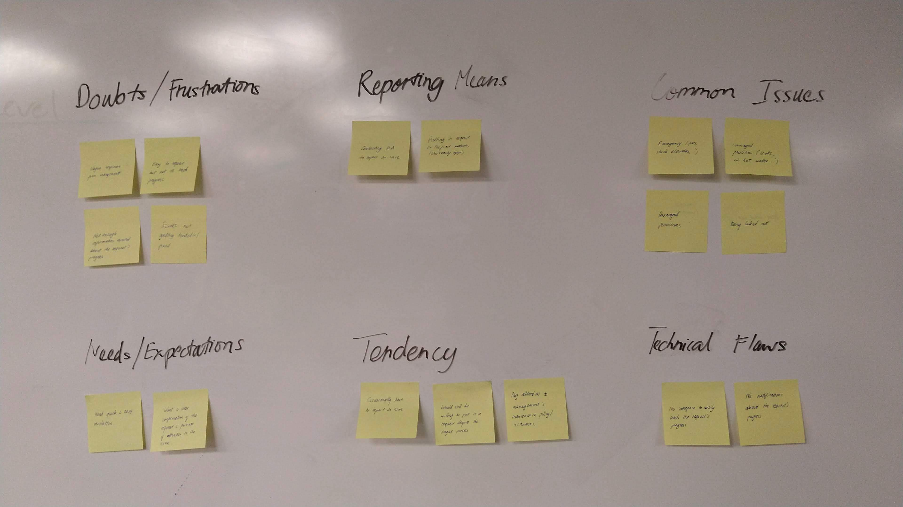From the interviews, I was able to narrow down the following common problems:
It’s easy to report an issue but hard to track the progress.
Some students would prefer to call their residence assistant or front desk rather than filling out a long form.
Most students usually encounter issues related to damaged facilities or fire hazards.
Competitive Analysis
Along with interviewing target users, I also conducted a competitive analysis on similar products to get a better insight into how the experience of community issue reporting is designed and executed. I explored 3 mobile apps: Spotlight, Bos:311, and SeeClickFix.
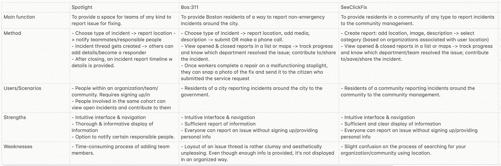This analysis helped me form a general idea of what is expected in an issue reporting app, how such an app should be structured, as well as certain flaws I’d want to avoid in my design of this experience.
Define
Problem Statement
From the interviews and the competitive analysis, I was able to define a problem statement:
Residents of college residential communities needs a way to conveniently report an issue and track its resolution, because communication from management is often lacking and the reporting process is inefficient.
To solve this problem, I define 3 major goals:
Provide a quick and easy way for residents to report an issue.
Present residents with sufficient details to track the progress of an issue’s resolution.
Efficiently connect residents with management and maintenance workers.
Personas & User Journey Map
Using the findings from my research, I developed 2 main personas and journey maps for my application: an active user and a conditional user.
Lisa Thomas - Active User
Lisa is an active user who generally pays more attention to her surroundings and living environment. She would take matter into her own hand to report an issue, and often would do so promptly.
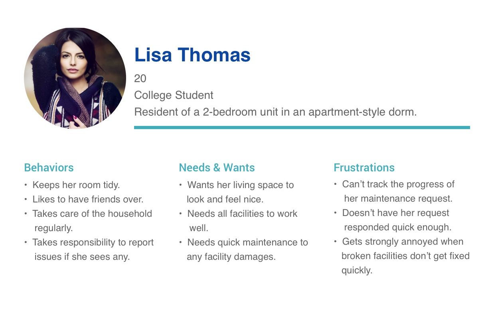Chris Anderson - Conditional user
Chris is a conditional user who doesn’t actively feel responsible for issues that don’t directly affect him. For issues that personally interest him, Chris would not always promptly take action, unless the issue requires urgent help.
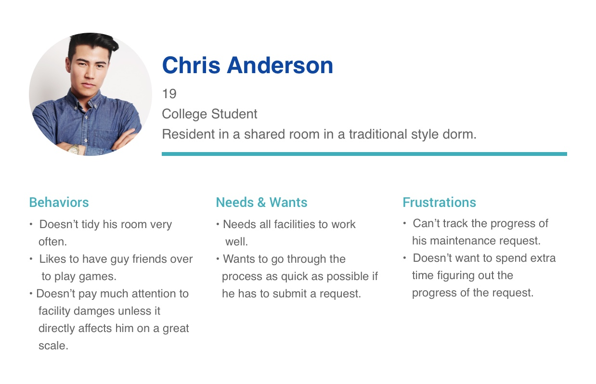Using these personas, I mapped out two user journey maps for each persona. The journey maps helped pinpoint the target users' key interactions with the app, their behaviors, and opportunities to solve their pain points, as these users go through each step of the issue reporting task.
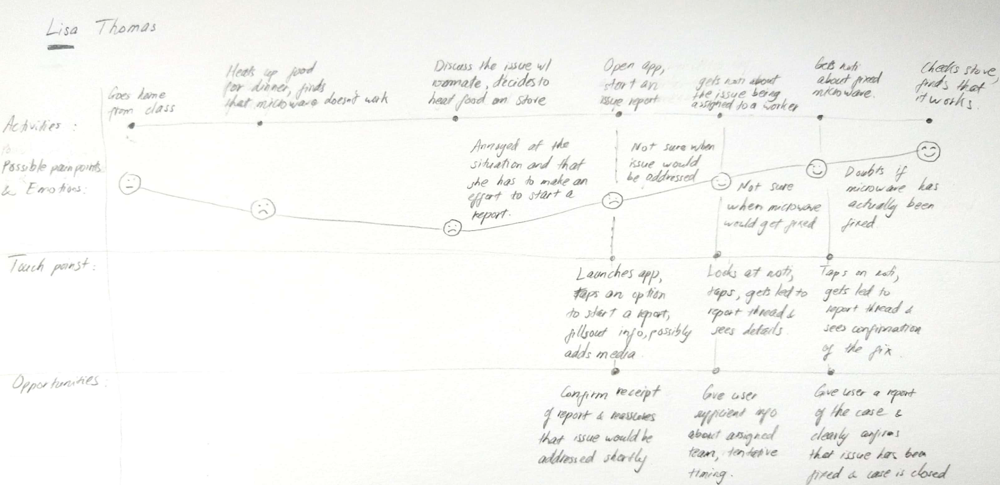 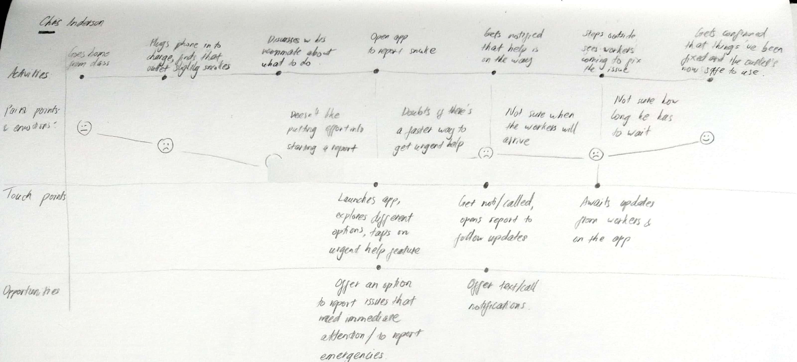These personas and journey maps were significantly helpful during the next step of brainstorming and ideation, as they helped revealing major pain points and the application’s potential opportunities to address those difficulties.
Brainstorming & Ideation
Using my synthesized research findings, I started brainstorming possible solutions, first by whiteboarding ideas and rough sketches to form rough ideas of how a user would interact with the app and complete a task. After a few rounds of iterations, I was able to start forming the features list and user flow of the application.
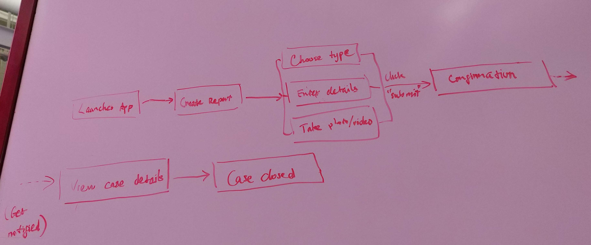 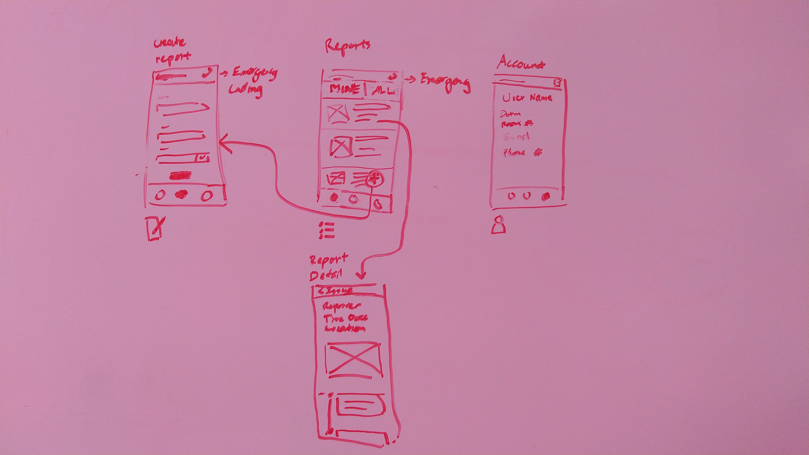Since the application revolves around the one experience of reporting an issue, I opted for a bottom navigation with 3 main views, with the reporting form being the action of the FAB:
Reports (the default home view): a list of reported issues
Create new report: a report form to fill out and submit.
Profile: an overview of the user’s information.
After deciding on the features list and user flow, I started wireframing to determine the layout and step of the app's key screens. I first sketched on paper, then moved onto creating mid-fidelity digital wireframes.
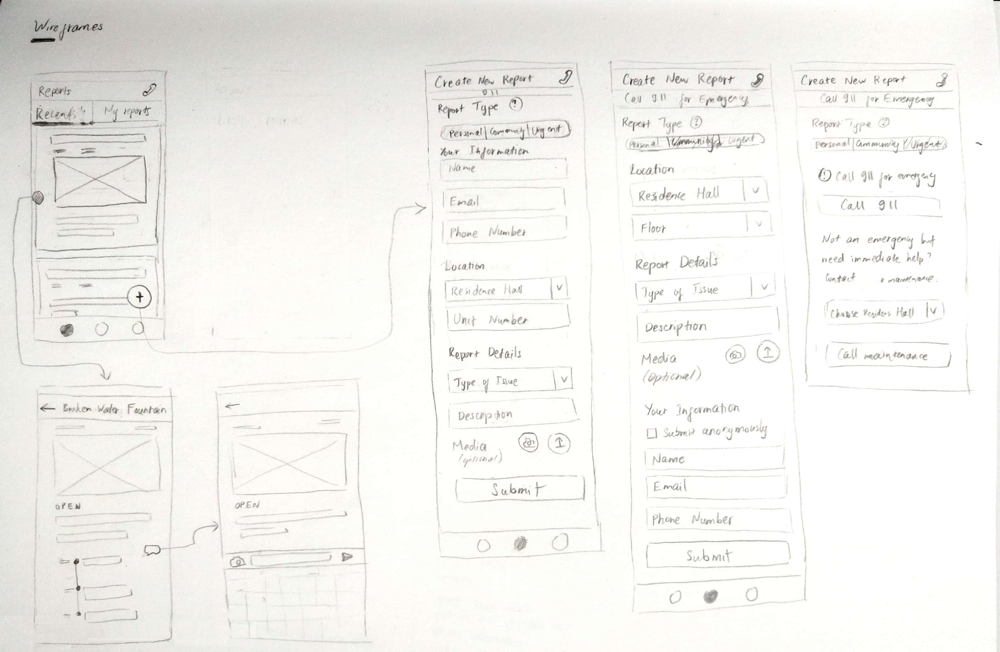I purposefully went with a layout inspired by Material Design, as I saw that this design system would help me easily achieve my intended look, feel, and function for the app: a clean, friendly and straightforward experience. Below is the final lo-fi wireframes after rounds of iteration in Sketch.
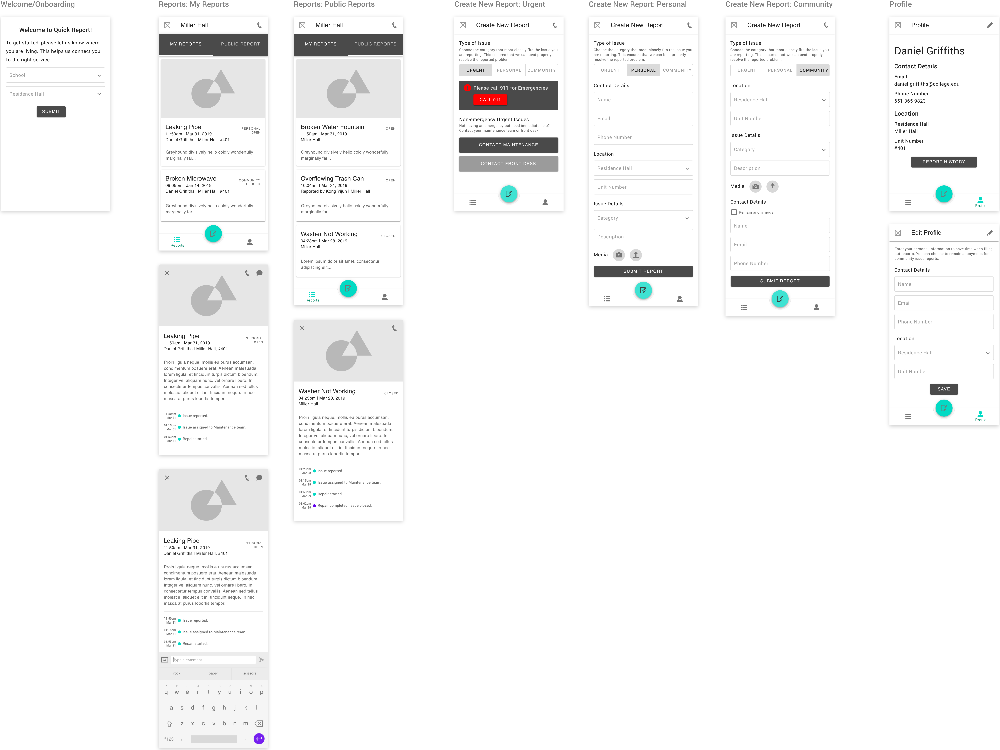Using the low-fidelity wireframe, I created a rapid prototype, which was used to conduct a few usability testing sessions to evaluate the overall user flow and test my assumptions. I had 5 students complete certain tasks related to reporting issues and viewing reports, and interviewed them throughout the tests. These sessions proved to be significantly helpful, as I discovered lots of opportunities and flaws with the then-current design.
Overall, the test users were able to grasp the application’s features and had little to no problem completing tasks. However, they did encounter certain types of frustration along the process. Some major flaws were involved with a user’s confusion with the tags that convey an issue’s type and progress, and the inability to quickly filter through a list of reports.
High-fidelity Mockups
Taking into consideration these findings, I started iterations on the wireframes and gradually added layers of higher-fidelity elements. After a few iteration rounds, I arrived at a high-fidelity mockup phase of the application.
Upon launching the app for the first time, users would go through a single onboarding step of providing information on where they’re residing. This would help the application locate the users and their respective maintenance/management service.
The home screen - Reports - is divided into 2 main tabs: My Reports and Public Reports. The 2 distinct tabs are based on my observation that among the issues commonly reported by the participants in the user interviews, there are two major categories of issues: those pertaining to one’s personal interests, and those to the whole community’s.
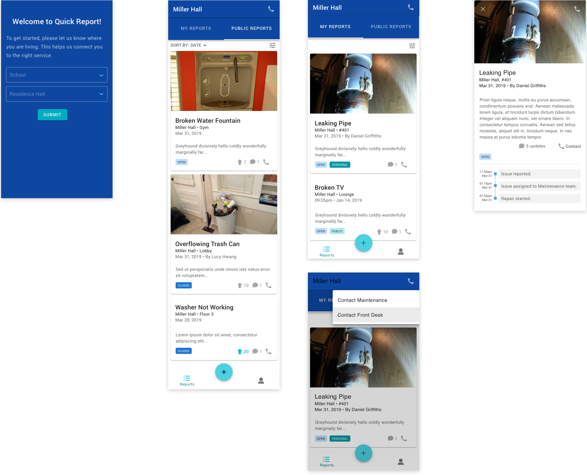While personal issues are only relevant to certain individuals, public issues affect the whole community and therefore deserves wider attention. For instance, if some gym equipments get broken, a lot of gym enthusiasts within a community might all want to know if they have been fixed. Thus, I decided to design an experience that allows common issues to be publicly displayed and followed by all individuals within a community, while personal issues are only communicated between the reporter and maintenance/management.
The My Reports tab show all the reports submitted by the user, both personal and public issues, since I intend for a user to be able to follow all of the issues he/she has reported. Meanwhile, Public Reports only shows the issues related to the whole community. On each tab, each report is displayed within a card that’s marked with tags indicating its progress, and whether it’s a personal or public issue, in case of the My Reports tab.
Upon clicking on each of the report, the card expands to a full screen display of the report’s details, which also features a timeline of updates on the issue. Here, I intend for a notification to be sent to a user whenever there’s a new update on his or her report, which he or she can choose to turn on or off in the settings. The notifications’ purpose are to enhance communication with residents about their reports, and keep them more on track with the progress of an issue’s resolution. A user also has the ability to comment on an open issue whenever there’s an update he or she would like to add.
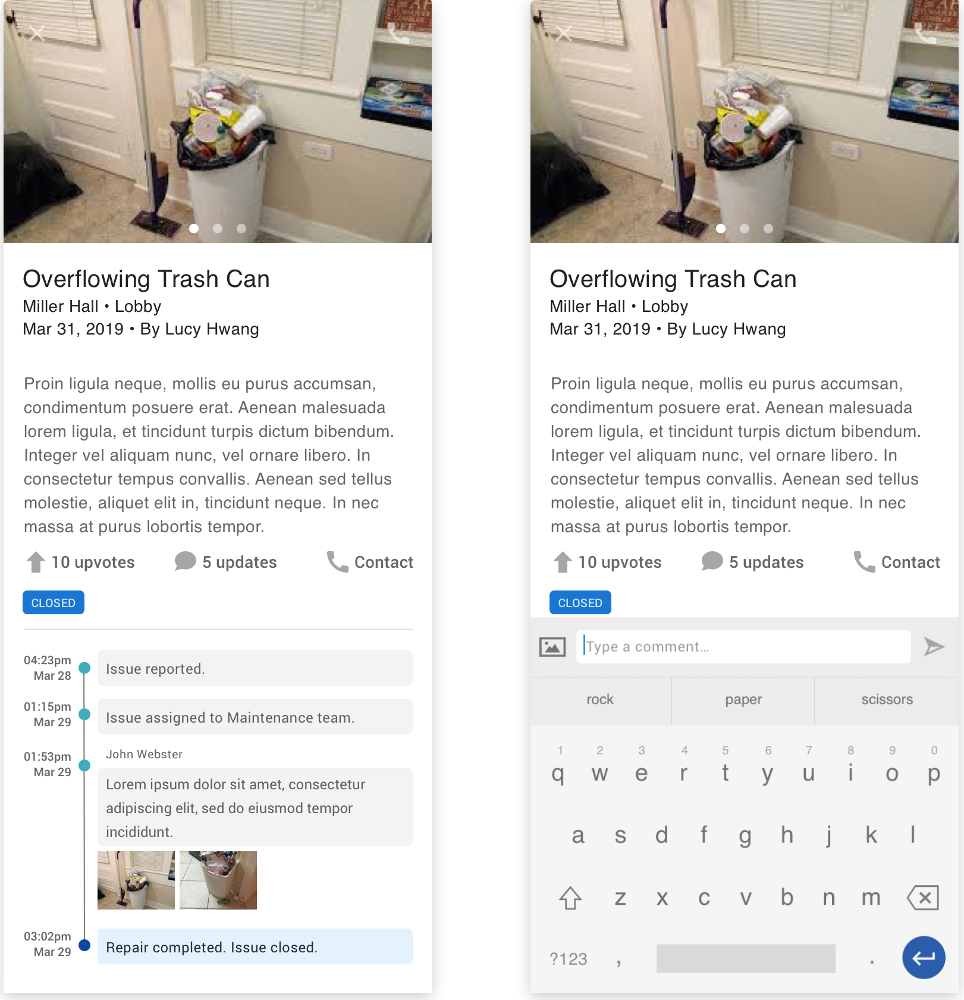After finding through user testing that the application was lacking an ability to quickly sort and filter through a list of report, I added these functions to the Reports tab.
The user can sort the reported public issues by date or by upvotes - also a suggestion discovered from usability testing. Sorting by upvotes let a resident quickly scan through issues based on relevance, potentially saving the problem of people creating duplicate reports of the same issue. Users can also filter public reports based on location or progress. Similarly, in My Reports, users can filter reports based on type of issue and progress.
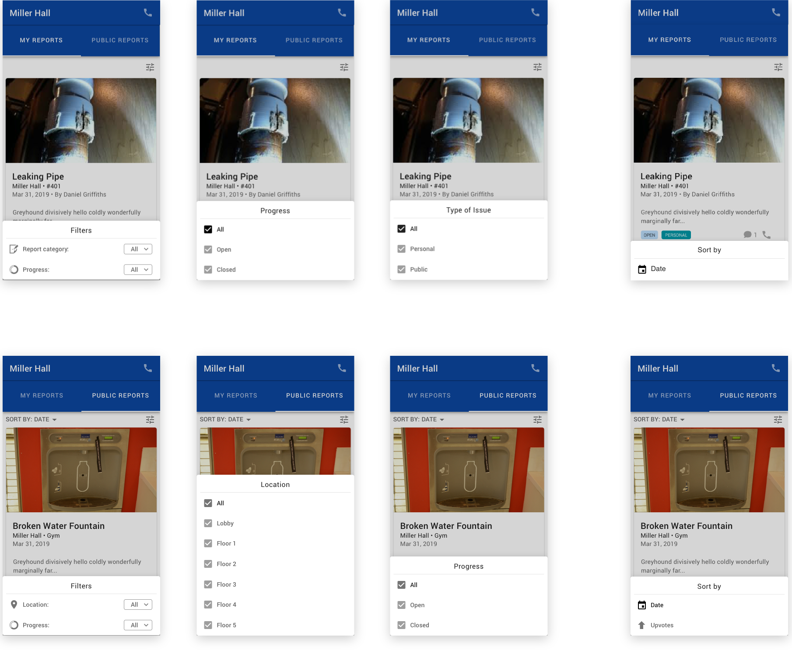The Create New Report view presents the user with a concise form to fill out details regarding the issue being reported. Here, I purposefully put a prompt for the type of issue at the top of the screen, to dictate which information would be displayed to the user.
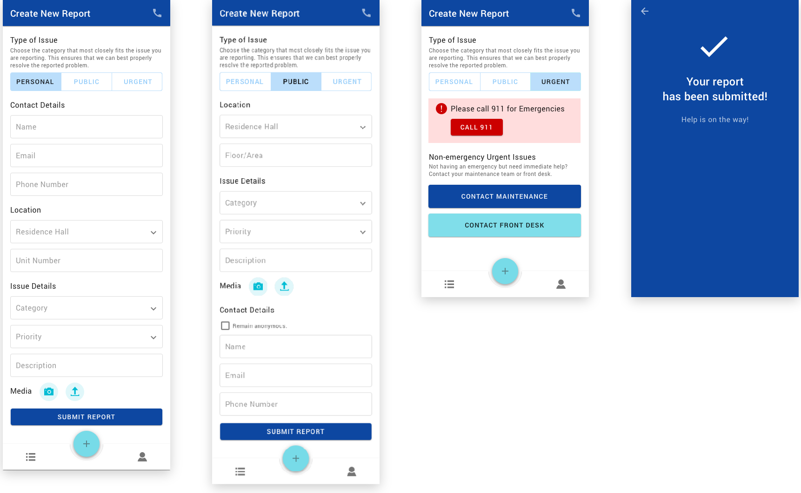I decided for the application to offer 3 main types of issues: personal, public, and urgent. The personal and public forms are for the discussed personal and public issues, respectively. These two forms are fairly similar, with form fields being straightforward and generously spaced out to cater for better legibility. In the public issue form, a user has the option to remain anonymous when submitting a report.
The urgent tab provides recommended actions rather than a form, since urgent matters require immediate attention. Knowing that emergencies could happen, I put in a notice prompting the user to call 911 for these matters. Meanwhile, there could be non-emergency issues that also require prompt assistance, such as a sudden power outage or suspicious activity. For those situations, I decided to put in options to contact maintenance workers or a residence hall’s front desk.
Upon submitting a report form, the application would present a confirmation screen. This is particularly important, since this screen reassures users that their reports have been received, and that help is on the way.
In addition, upon choosing a category of issue, if the issue is a common one and can potentially be fixed without the help from a professional, users would be prompted to find help from a self-help guide.
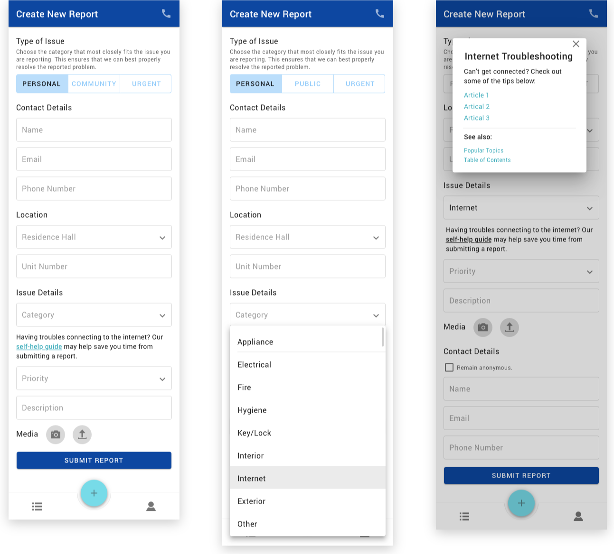The Profile tab simply displays all of a user’s information. If users have not provided their personal contact details, they would be prompted to do so upon first opening this tab or upon editing their profile, with a notice that this provided information would save from re-entering their information for every new report created.
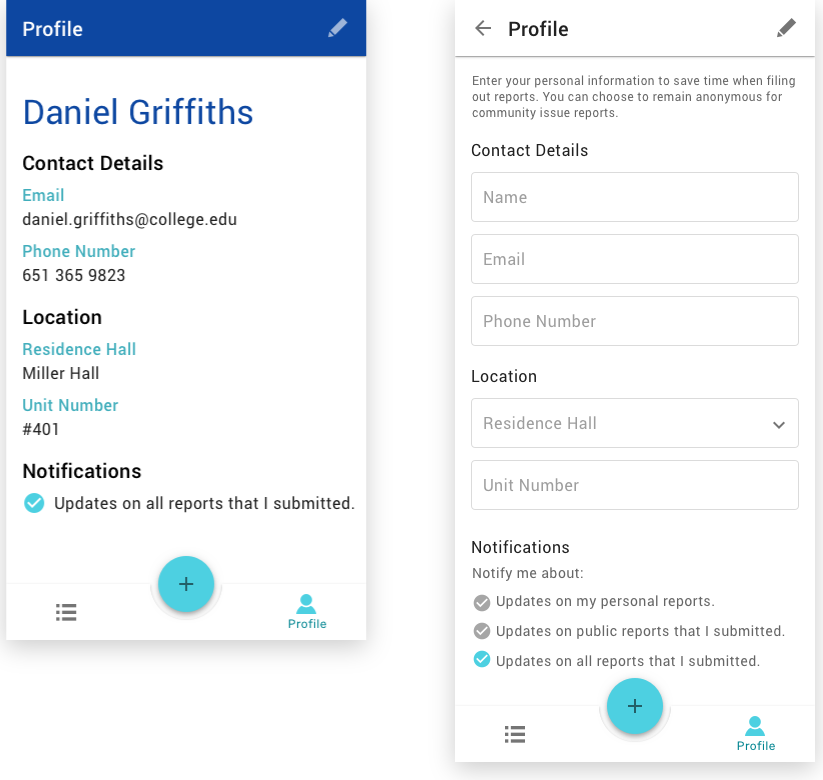Prototype
Using the high-fidelity mockups, I put together a prototype to better demonstrate the interactions involved throughout the application's experience.
Stretch Goals
Due to time constraint and other limitations, I was not able to address several other intended elements of this experience. As discussed earlier in the case study, I designed this experience with the intention for it to be a cohesive system that could be utilized by residents, management, and maintenance workers alike. When all information is stored and communicated within one environment, it would be significantly easier for all of the mentioned parties to be notified of reports, take action, and track progress.
Another stretch goal for this experience is to expand it into a web application. A mobile app provides a quicker way for a college student to easily pull out his or her phone and put in a report. However, for other intended users of the system like those who work for a residence hall’s management, a web app would be more applicable. Also, under certain circumstances, a resident may need to input a lot of information, which may be more easily done on a computer as oppose to a phone.
SiriusXM Online Cancellation (Work in Progress)
The Problem
SiriusXM offers subscription-based radio services. Currently, the company is not letting customers cancel online. Subscribers have to cancel plans via phone calls.
In November 2018, the digital experience team got an assignment to create an online cancelation flow to potentially offer an alternative way for customers to cancel their subscriptions. This posed as a challenge, since this flow was completely new to the SiriusXM website at the time.
My Role
As an intern on the Digital Experience team, I assisted Senior UX designers throughout all steps of the design process. So far, we have got through user research, brainstorming, wireframing, and user testing. My responsibilities have been extensively focused on conducting competitive analyses and creating wireframes.
The Process
Research
To kickstart the project, we obtained data about SiriusXM listeners and their experience with our cancelation process from our analytic teams. Thanks to this data, we were able to learn about our users and their pain points during the cancelation process.
To get more insight into the online cancelation process, the team decided to start with a competitive analysis. I was tasked with comparing and contrasting the online cancelation flows of subscription-based services similar to that of SiriusXM. To do this, I explored the flows offered by services such as Netflix, Spotify, Hulu, Pandora, and Amazon Prime.
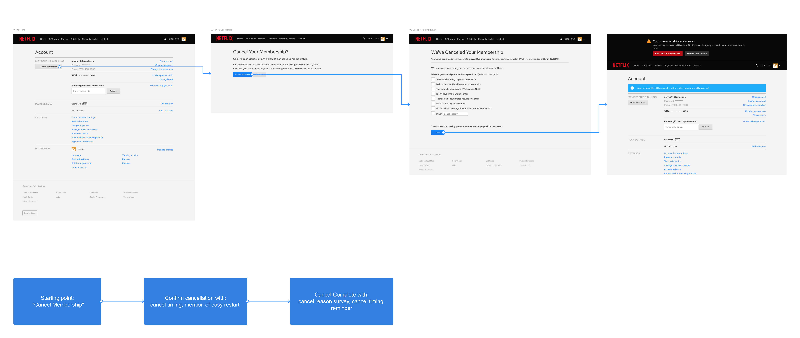 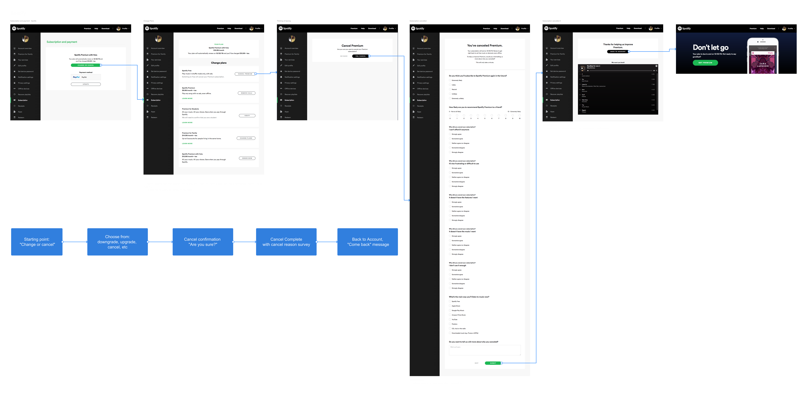 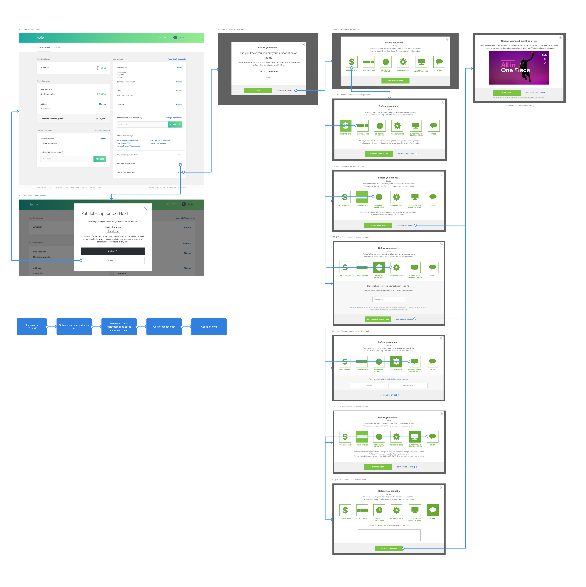 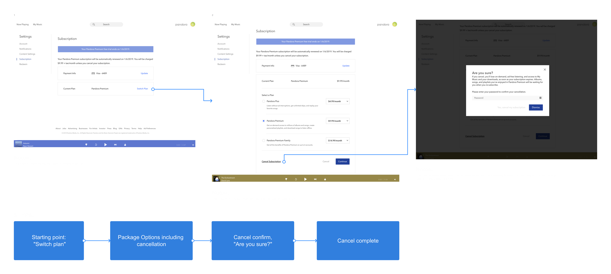 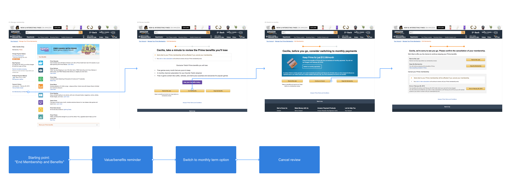The competitive analysis shed light on a lot of notable aspects present within a seemingly simple flow. From my research, I was able to deduce a few conclusions about the common themes as well as differences present across the different flows. A lot of services try to divert customers’ attention away from the cancelation option, instead introducing alternative actions such as switching plans, temporarily putting the subscription on hold, or staying to benefit from a downgrade offer. Meanwhile, some flows are more lengthy and complicated than others. These details show that there’s a certain balance that needs to be achieved in this type of flow. From a corporate perspective, a service generally wants to retain its customers. However, from a design perspective, the process also should not be too painstaking or lengthy for users. This made me realize that our goal was to achieve a balance somewhere between these two extremes.
Brainstorming & Idea Development
Taking our learning from the research step, the team moved onto idea development, starting with brainstorming sessions. During these sessions, we incorporated data we already knew about our customers with examples we picked up from the researched cancel flows to devise our own cancelation process. The ideas got iterated a few times before two main concepts were chosen: a “plan switching” flow and a “reason picking” flow.
Wireframing
In the plan switching flow, the process starts with a “Switch your plan” option, which takes users to a page where the primary action is to switch to an alternative plan. This flow aims to discreetly divert the user’s attention from cancelation to a change of service.
 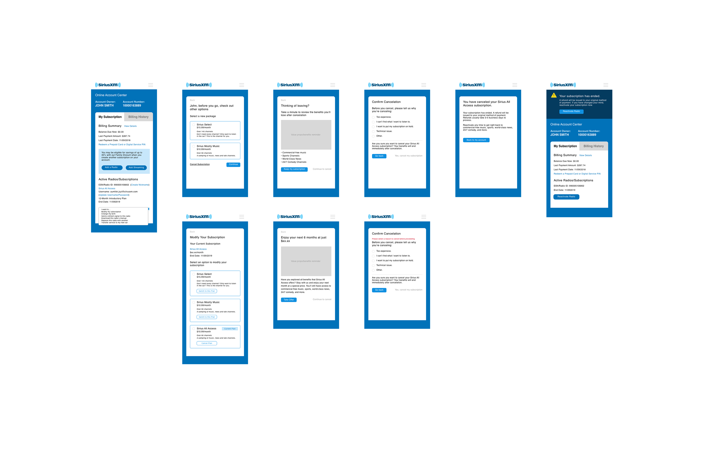
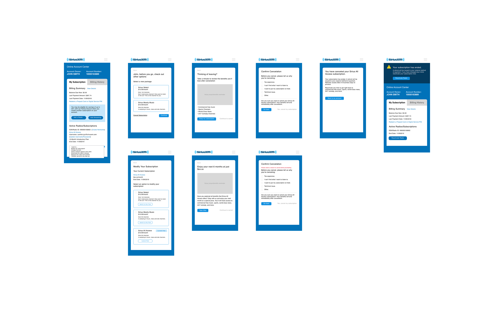
In the reason picking flow, upon clicking on the option to cancel subscription, users are asked about their reasons to cancel, and presented with checkboxes laying out possible causes. Users have the option to pick one from the checkboxes, and subsequently presented with an alternative action or solution respective to the chosen reason.


During both flows, eligible customers would be shown a downgrade offer when they are a step away from confirming cancelation. After cancelation is completed, the accounting landing page would have a pushdown banner notifying customers with their canceled subscription, end date of benefits, and a reminder that they can reactivate their service at anytime.
Prototyping & Usability Testing
After discussions and iterations on the wireframes, the team decided to run a competitive usability test on the two cancellation flows to gain better insights into how potential users would react to them.
We recruited test participants and created test sessions using usertesting.com. We made sure the test participants closely aligned with the demographics of our listeners and were familiar with subscription-based services.
Prior to creating the test, the team tasked me with researching and synthesizing best practices for competitive usability testing with particular consideration to the two cancellation flows. After discussing the findings and more exploration, we decided to have the test participants go through both flows within one test session, following the same curated tasks while thinking outloud. The order of the flows are randomized throughout the sessions so as not to flaw the results with potential biases.
The recorded test sessions then got analyzed based on pre-determined comparable benchmarks of the two test flows. This way, common themes and touch points within both flows get compared objectively and efficiently.
Next Steps
Currently, we are in the process of analyzing the results from our usability testing sessions. Afterwards, we plan to move onto high-fidelity visual mockups/prototype and implementation.
T.A.G. Labs Learning Management System
Overview
T.A.G. Labs is a non-profit organization based in Washington, DC, whose purpose is to help young people enhance their creative talents by developing computer games, mobile applications and websites. In 2018, T.A.G. started their online program, which called for the need of a learning management system (LMS). As a long-term collaborator with T.A.G., I helped the team create the design for this system.
My Role
Throughout this project, I worked closely with the T.A.G. Labs Web Design/Dev team. I was mainly responsible for conducting user research and creating wireframes as well as high-fidelity mockups for the design of the LMS.
The Process
Research
Knowing that our main users are students between the ages of 10 and 18, we developed personas accordingly so as to get a deeper insight into our target users’ needs. We also did various competitive analyses on similar online learning systems such as Codecademy, Lynda, Coursera, and Udemy. From these analyses, we were able to explore each systems’ strengths and shortcomings.
Through our research, we were able to identify certain pain points during the online learning experience. In an online environment without direct guidance from instructors, students sometimes need extra assistance in keeping on track with course progress. In addition, online learning tools are often overwhelmed with content from numerous courses, which calls for a coherent navigation flow.
Idea Development & Wireframing
With our findings, we eventually came up with the following main goals for the design of the LMS:
Make it easy to browse the LMS content, sign up, and keep up with course progress.
Display information in an orderly, comprehensible manner.
Create an engaging interface.
Bearing the goals in mind, I built a navigation system that guides the user smoothly through different parts within the LMS and provides a satisfying learning experience. On the home landing page, the user is presented with 3 tabs for on-going courses, completed courses, and all courses, which features a search tool for easier browsing. These tabs provide an organized way for the user to keep track of their courses while browsing other available options.
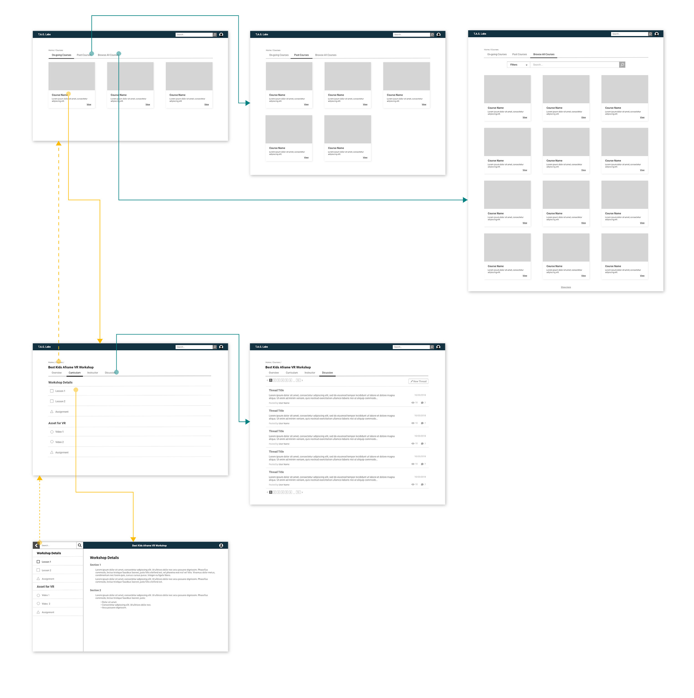Each course’s landing page also includes 4 tabs, each of which displays one type of information about the program, so as not to overwhelm students with too many details. In the Curriculum tab, each lesson and its sections are displayed clearly. The sections’ different type of media like reading, assignment, or video are illustrated by different icons for easy recognition.
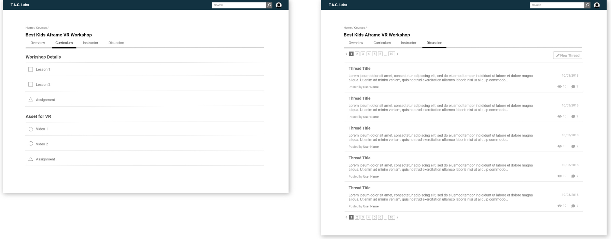Along with the desktop wireframes, I also created a mobile version with similar navigation.
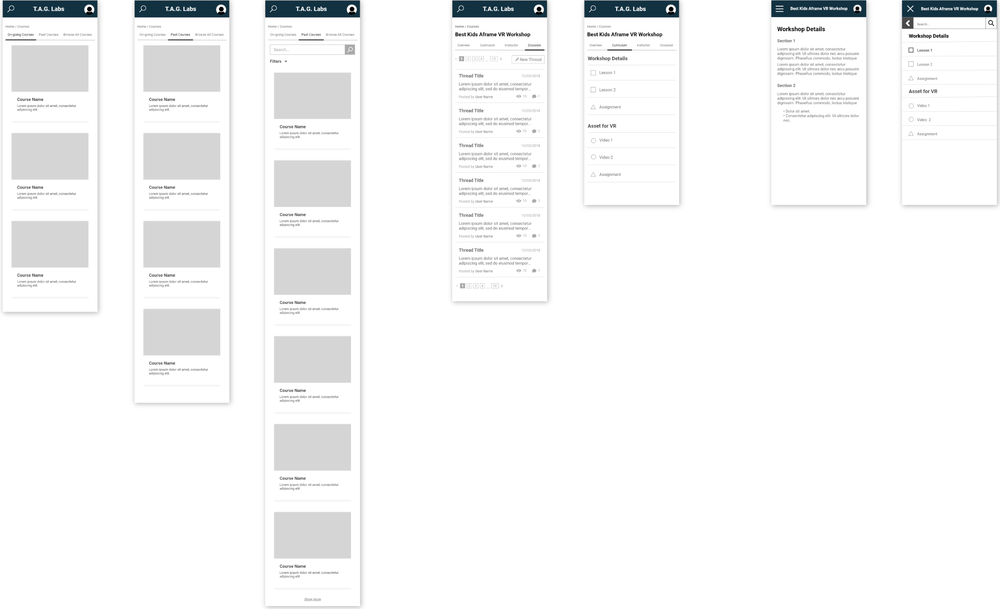High-Fidelity Mockups
Using the wireframes, I started developing detailed mockups, adding and adjusting elements like accent colors, icons and text treatment to perfect the look and feel of the LMS.
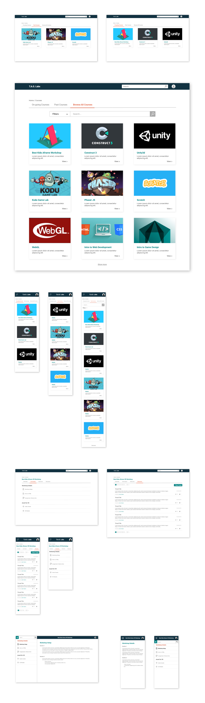Veews
Overview
Veews is a messaging application developed by a team of students from Howard University. Veews provides an optimized tool for college students to connect with one another and to their campus.
As the lead UI/UX designer of the project, I work closely with my teammates to research users, develop ideas and iterate UI/UX elements for the application.
The Process
Background & Research
Veews’ main objective is to create a unique digital experience for students to be connected to their campus community. Nowadays, college students in America, and in many other countries, constantly utilize technology for both their school and social life. Among the different types of technology they use, messaging apps serve as an important way to stay connected with peers and updated about relevant information. However, most of such apps were not created solely for college students, and therefore do not satisfy all of their needs and wants. This is where Veews steps in to cater a unique experience that’s specially crafted for campus connection.
Starting out, our team gathered information about our target users, who are college students in the US, mostly from 18 to 22 years old, and used to utilizing technology to handle tasks for both school and social life. Our users use group messaging, social media, and similar means almost every minute of a day, exchanging materials for a class, getting the latest updates on a school event, or joining a new student club. Knowing these behaviors, we began to form solid ideas of how Veews could provide a useful and fulfilling way for college students to stay connected within and beyond the campus.
We continued by studying messaging apps widely used by college students like GroupMe, WhatsApp, and Messenger. We compare these apps' features and objectives with those of Veews to determine what we could do to create a unique experience for Veews’ users.
The Problem & the Solution
From our research, we narrowed down the biggest pain points within college students’ experience with messaging apps:
Time-consuming process of creating group chats. Normally someone’s phone would be passed around a crowded classroom so that everyone can be added into the group.
No organized way to browse a campus’s relevant groups. At our college, Howard University, as the school year starts, GroupMe groups would be overwhelmed with messages with the motif: “can you add me to the group of” plus the name of a course, dorm, or student organization.
Knowing these problems, we then did brainstorming sessions and came up with the following main goals as an attempt to solve the above problems:
Provide a coherent system that allows students to easily find and create essential messaging groups such as those for classes, residence halls, and student organizations.
Keep students up to date with relevant campus updates.
Wireframe & Iteration
To begin, I sketched rough wireframes from the ideas formed by our user research. Below is one of the early wireframe versions.

After getting feedback from the team, I applied necessary changes to the wireframes, then moved on to create detailed mockups and rapid prototypes. Our team had several discussions on the mockups, as we discovered flaws of the designs and explored solutions to these problems. One major finding of these discussions was that the design did not carry elements that have potentials to attract our target audience – college students. I then started making iterations of the mockups until our team agreed upon one design.
As my teammates started implementing the initially approved design and created a prototype, we conducted a user testing session with Howard students. The session was significantly helpful in finding out shortcomings and limitations with the app’s features and navigation. From the test’s results, the team decided to add several changes to the app, one major of which was switching from a side menu to a bottom navigation bar as an effort to make the app’s main features more organized.
High-Fidelity Mockups
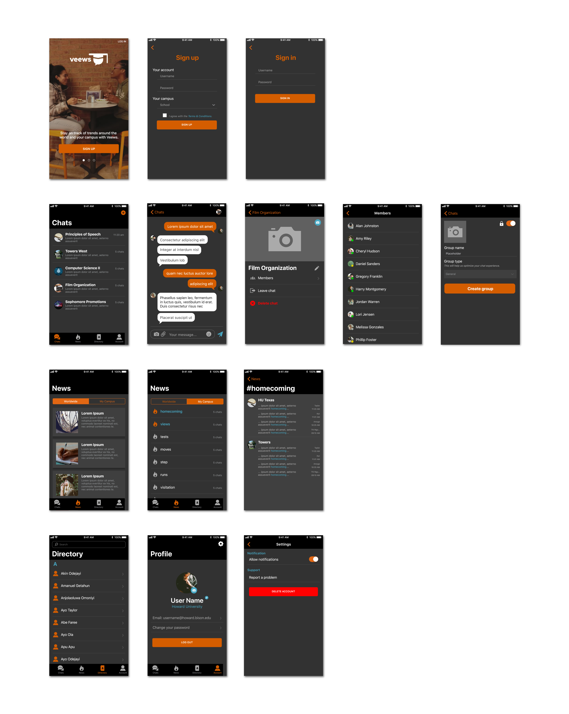Prototype
Below is a prototype of the app's current design, which is nearing one of the last iterations before our next big update.
DC Metro App Redesign
Overview
Being a frequent commuter on public transportation in Washington, DC, I often encounter difficulties tracking buses and trains, whereas the DC public transportation isn’t often reliable. To deal with this problem, I have been using the app DC Metro, which has proved to be quite effective. However, I have noticed a lot of shortcomings which significantly reduce the app’s usability. The same applies to quite a few people I know, who also commute within the DMV area. Hence, I came up with the idea of redesigning the app to solve those problems.
The Challenge
My goals for the project surround the aim to make the app DC Metro more useful, usable, and satisfying for the user. These goals include:
Create a better navigation.
Elevate the visual interface.
Make it faster and easier to use the DC metropolitan public transportation system.
My Role
Since this is a personal project for practicing purposes, I took on most of the major roles of the UX design process: researcher, visual designer, and prototyper.
The Process
Research
I tested the existing DC Metro app with 5 participants, who are frequent commuters of the DMV public transportation system. During the tests, I asked questions that gave me insights of what obstacles the participants faced while trying to navigate the DC transportation system using the existing app.
From all the data collected from the tests, I created a list of challenges the participants faced while using the existing DC Metro app. Then, I picked out the most common challenges to focus on solving:
Lengthy process of obtaining desired real-time tracking
Limitations of the trip planner feature
Sketches / Wireframes

Mockups & Prototype
I chose the best wireframes from all the sketches and began creating mockups. From the mockups, I created a rapid prototype.


User Testing & Iteration
Using the initial prototype, I tested with 5 participants, asking the same questions used during the preliminary research process, which focus on the obstacles the users may face while trying to complete a task related to commuting. From the answers, I was able to figure out the weaknesses of my solutions. Then, based on my findings, I reiterated on a few components of the prototype and finally reached a final version of the redesign.
The existing DC Metro App & the Redesign
The existing DC Metro App

The Redesign
The redesign features a cleaner interface, which offers a more convenient navigation and hence faster ways for users to complete Metro-related tasks like tracking vehicles and searching for directions.
The "Nearby" tab shows all the bus and Metro stations around the user's location. Users can also search for places, stations and directions from this tab.

The "Bus" and "Metro" tabs give off details of bus and Metro stations. Users can seamlessly navigate from information about each station, route, and live updates.


From the "Account" tab, users can access their saved stations, route, and places. From there, users can navigate straight to the details of the saved items.

The redesign features a cleaner interface, which offers a more convenient navigation and hence faster ways for users to complete Metro-related tasks like tracking vehicles and searching for directions.
The "Nearby" tab shows all the bus and Metro stations around the user's location. Users can also search for places, stations and directions from this tab.
The "Bus" and "Metro" tabs give off details of bus and Metro stations. Users can seamlessly navigate from information about each station, route, and live updates.
From the "Account" tab, users can access their saved stations, route, and places. From there, users can navigate straight to the details of the saved items.
T.A.G. Labs Website
Overview
T.A.G. (Technology and Gaming) Labs is a D.C. based nonprofit launched in 2013 by technology professionals with a passion for teaching young people coding and other S.T.E.A.M. related skills through the building of interactive gaming experiences.
My Role
I started being an intern at T.A.G. Labs in March 2017. Together with the Web Design/Development team, I worked on the T.A.G. Labs website. My usual tasks included adding new content to the website, which ranged across various forms such as interactive graphics and webpages.
As an intern, I assisted the team with researching, designing visual mockups, developing website components and implementing them onto the Wordpress platform.
While working on the website, I followed two main objectives:
To make the T.A.G. Labs website engaging to students and potential sponsors.
To keep the styles of the newly added content consistent with the original web theme in particular and with the T.A.G. Labs brand identity in general.
The Site view site
Some of the content I worked on:


Navient Path to Success
During my time interning as a web design intern at EverFi, Inc., I had the chance to work on the redesign for Navient’s online financial education tool - Navient Path to Success. This redesign was an effort to keep up with Navient’s rebranding in 2017.
I started the project by studying the new Navient brand identity, taking into account the crucial elements of the brand. Based on the findings, I created wireframes and mockups, which were then reviewed by my team members. After presenting the final mockups and getting approved by Navient, we started development. The final product was a website that features a straightforward, coherent introduction to Navient’s learning tool and a style that’s consistent with the Navient brand.

One Page Portfolio Template
Overview
This project was an attempt at crafting my first online portfolio. Building this website provided me with a chance to dive deeper into more web development skills and to improve my familiarity with web frameworks.
The Process
As a beginner at web development at the time, before actually starting the project, I spent time working on improving my HTML/CSS and JavaScript knowledge. I also looked at various frameworks, and decided to proceed with Bootstrap, as this popular framework seemed to serve most of the project’s objectives. After finishing the information architecture and wireframes for the website, I moved onto rough mockups, and then implementation. There were various obstacles during the development phase, but by attempting to overcome these difficulties, I was able to obtain lots of new knowledge and get much more comfortable with web development.
Information Architecture & Wireframes


Mockup

The Final Product view site
The project’s final outcome was an online portfolio that reflected my design principles at the time, when I was in my second year of college. The design was used for my portfolio website until I started implementing a rebranding project that included a new portfolio design.
Veews Brand Identity
Veews is a messaging application developed by a team of students from Howard University. Veews provides an optimized tool for college students to connect with one another and to their campus.
As the lead designer of the project, I created and managed all design aspects of the app, including the Veews brand identity.
Thi Nguyen Brand Identity
This project was initially created for a school project, and later developed into my current brand identity.
The Thi Nguyen identity has an emphasis on me, Thi Nguyen, being a creative, innovative and flexible individual – a versatile puzzle piece that could fit well into any team.
The Logo
The logo for the Thi Nguyen brand shows the letter t in lowercase, which serves as my first initial while also has the form of a puzzle piece.
Style Guide
Axiom Brand Identity & Stationery
Overview
For a school project, I created the brand identity and stationery system for Axiom, a pseudo publishing firm. The concept of the Axiom brand surrounds the idea that Axiom books shed light on the truths of life. Hence, elements echoing the shape and feel of sunrays are present throughout the brand identity.
The Logo
The Axiom logo follows the sun ray concept of the brand. The graphic mark show three sunrays, all of which form a big area of sunlight.
The Stationery System

Howard University Flyers
A selective colection of flyers I designed for various events on Howard University campus.


The Creative Coder
Digital illustration, 2017
Khari
Acrylic on canvas, 2019.
Hate, Love
Acrylic on canvas, 2016.
Past Midnight on Georgia Ave
Acrylic on canvas, 2016.
Up
Water color, 2015
Forgotten Season
Water color, 2014. Honorable mention in Painting category, Howard University 85th Annual Art Student Exhibition
If Only
Taken during the snowstorm Snowzilla. Phone photography. Washington, DC, 2016.
Elm St.
Phone photography. Washington, DC, 2016.
Rain on the Hilltop
Phone photography. Washington, DC, 2016.
Sunset Waves
Phone photography. Washington, DC, 2016.
Talk
Phone photography. Washington, DC, 2015.
Fear
'Lost in 19' Series. Minneapolis, 2014
Twinkle Duluth
2014
Life Passes
Minneapolis, 2014.
© Thi Nguyen